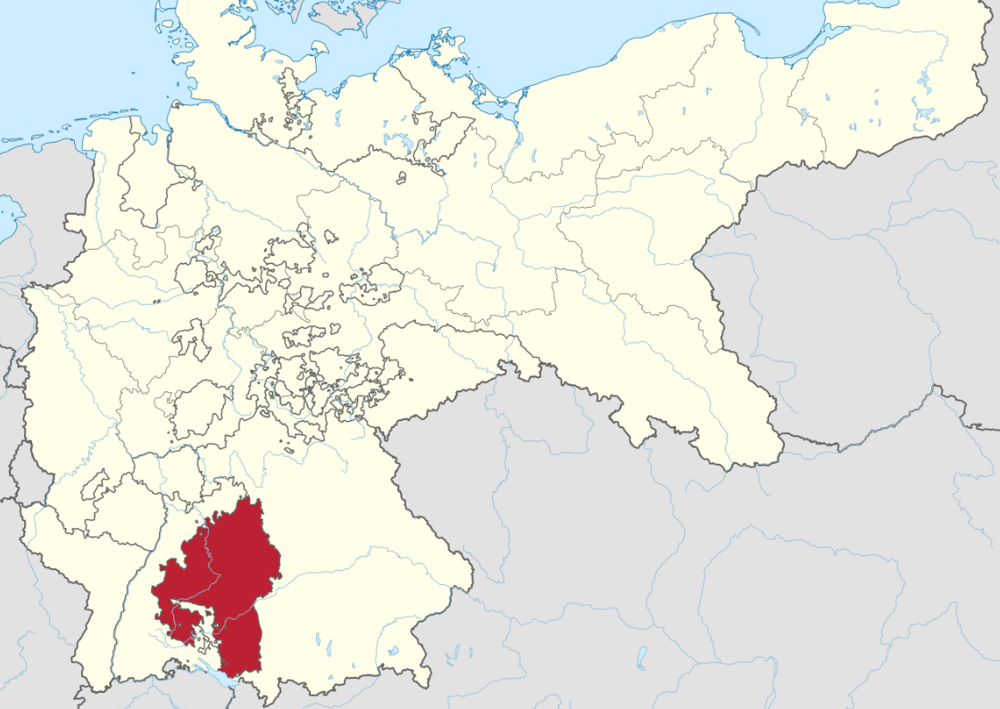
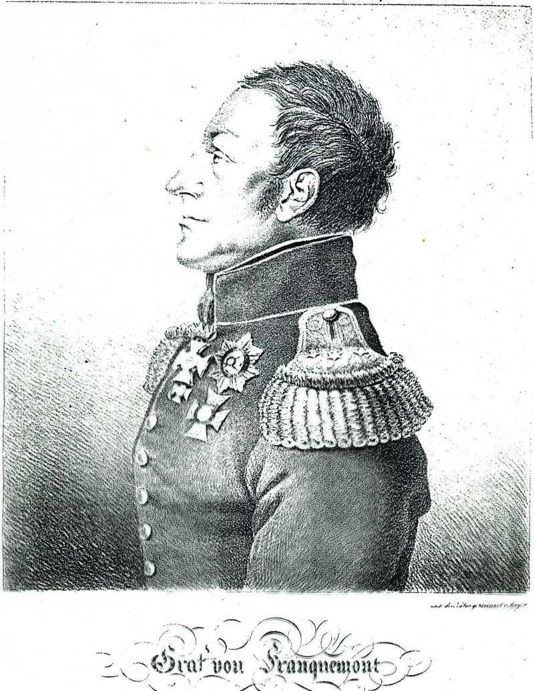
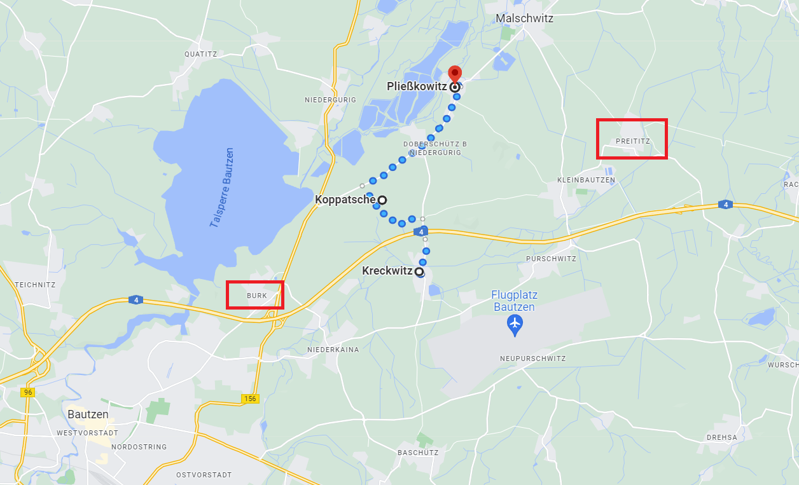
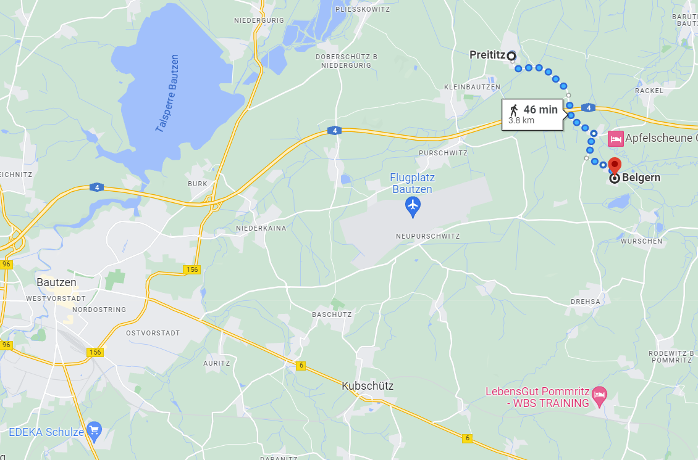
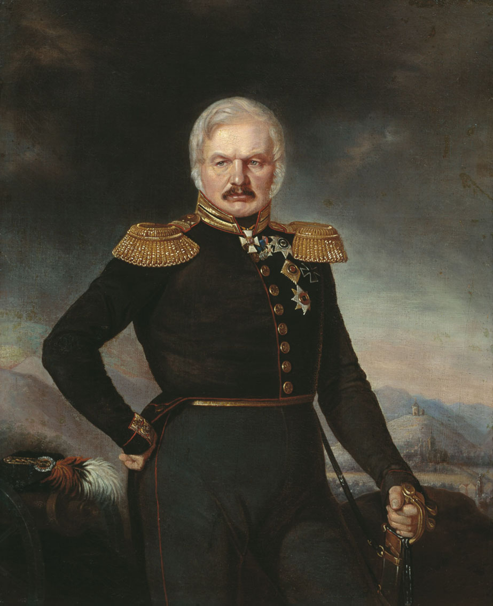

바우첸 전투 (6) - 삼면초가
게시: 2023-05-15T06:30:55+09:00
술트와 마르몽, 네의 3면 공격은 당연히 모조리 크렉비츠 언덕에 한꺼번에 집중된 것은 아니었습니다. 블뤼허의 프로이센군 전선은 크렉비츠(Kreckwitz)에서 도버쉬츠(Doberschütz)를 거쳐 플리스코비츠(Pließkowitz)까지 길게 펼쳐져 있었는데, 크렉비츠 언덕 쪽에 가장 가까왔던 것은 술트의 제4 군단이었고, 그 중에서도 프란커몬트 (Frederic von Franquemont) 장군의 뷔르템베르크 사단이 그 선봉에 나섰습니다. 결과적으로 독일인들끼리 맞붙은 전투였으니 동족 상잔이라고 생각할 수도 있겠지만, 실은 남부 독일이자 카톨릭 배경인 뷔르템베르크와 북부 독일의 개신교 배경인 프로이센은 30년 전쟁 동안 온갖 적대감을 불태웠던 사이였으므로 정말 치열하게 싸웠습니다.

(뷔르템베르크는 지금은 Baden-Württemberg라는 행정구역으로 바덴과 통합되어 있습니다만, 당시는 왼쪽의 바덴 왕국 그리고 오른쪽의 바이에른 왕국과 함께 별도의 독립 왕국을 구성하고 있었습니다. 물론 선제후에 불과했던 뷔르템부르크 공작이 왕이 된 것은 나폴레옹 편을 들어 라인 연방에 재빨리 가입했기 때문이었습니다. 나폴레옹이 주도한 라인 연방에 가입한 독일 소공국들을 민족 배신자라고 부를 수는 없습니다. 당시엔 민족이라는 개념보다 종교가 더 중요했는데, 라인 연방의 주축을 이루었던 독일 남서부는 가톨릭이 더 강세였였으니까요.)

(나폴레옹보다 1살 어렸던 프란커몬트 장군은 가문 이름 자체가 프랑크몽이라고 불러야 할 것처럼 프랑스풍의 느낌을 주는데 어떻게 해서 저런 성씨를 가지게 되었는지는 불분명합니다. 프란커몬트는 당시 뷔르템베르크의 군주인 카알 오이겐(Carl Eugen) 뷔르템베르크 공작과 레지나 몬티(Regina Monti)라는 이름의 어떤 무용수 사이에 태어난 혼외 자식이었습니다. 마치 '왕좌의 게임'에서의 존 스노우가 스타크 가문의 서자라서 스타크라는 성을 가지지 못한 것과 비슷한 모양입니다. 그는 존 스노우처럼 거친 인생을 살아야 했습니다. 다른 귀족 가문의 차남들이 흔히 하듯이 어려서 군에 들어갔는데, 하필, 어쩌면 필연적으로 그가 속한 부대는 해외 파병을 위해 만들어진 부대로서 소위 계급을 달고 임관하자마자 부대 전체가 네덜란드 동인도 회사에 팔려가 처음에는 남아프리카에서, 나중에는 바타비아(인도네시아)에서 복무했습니다. 그는 프랑스 혁명 전쟁이 벌어질 무렵에는 실론 섬에서 복무 중이었는데 1795년 영국군의 포로가 되어 인도에 억류되어 있다가 5년 만인 1800년에야 영국에서 석방될 수 있었습니다. 왕의 서자로서 그런 경험을 쌓은 것이 도움이 되었는지 이후 그는 급격한 승진을 하여 대위로 뷔르템부르크군에 복직한 뒤 7년 만에 대령, 다시 1년 만에 소장 계급으로 승진했고 무엇보다 좋았던 것은 러시아에 가서 돌아오지 못한 1만6천의 뷔르템부르크군 중에 하나는 아니었다는 것이었습니다. 그러나 이 바우첸 전투에서 중상을 입었습니다. 나폴레옹의 백일천하 때는 뷔르템부르크 원정군을 이끌고 연합군 편에 가담했습니다. 그는 말년까지 장관직을 수행하는 등 잘 살다가 71세에 사망했습니다.) 결국 최고 지휘관인 프란커몬케 장군도 중상으로 쓰러지고 그 휘하 여단장인 지카르트(Joseph-Victorien Sicard)는 전사해버리는 등 뷔르템베르크 사단은 많은 희생을 치른 끝에 클뤽스(Joseph Friedrich Karl von Klüx)가 이끄는 프로이센군 여단을 밀어내고 코파츠쉬(Koppatsch) 언덕을 차지할 수 있었습니다. 또한 술트의 다른 사단들은 플리스코비츠를 공격하여 점령했습니다. 그러나 블뤼허는 크렉비츠만큼은 끝까지 지켜냈습니다. 하지만 오후 3시 경에는 나폴레옹 본인이 부르크(Burk)에 도착하여 직접 감독하는 가운데 근위 포병대가 크렉비츠 언덕을 강타하기 시작했습니다. 이어서 바로아(Pierre Barrois) 장군이 지휘하는 신참 근위대 16개 대대가 크렉비츠 언덕을 향해 전진을 시작했습니다. 러시아군에서 지원대로 보내주었던 24문의 12파운드 포들이 매우 훌륭한 활약을 해주어 근위대의 접근을 최대한 막았지만, 24문의 포격만으로 보병 사단들의 접근을 막아낼 수는 없었습니다.

(코파츠쉬와 플리스코비츠, 그리고 크렉비츠의 위치입니다. 저 점선의 길이는 5km 정도에 불과합니다. 그 왼쪽 붉은 상자로 표시된 부르크의 위치도 보실 수 있습니다.) 이렇게 북서쪽과 남서쪽에서 프랑스군의 협공이 이어지는 가운데, 동쪽에서 네까지 합세하여 공격했다면 크렉비츠의 프로이센군은 완전히 섬멸당할 수도 있었을 것입니다. 그러나 그 순간, 네는 마침내 도착한 후방 사단들과 합세하여 직접 3개 사단을 이끌고 프라이티츠로 진격하고 있었습니다. 프라이티츠를 지키고 있던 클라이스트는 무려 3만이 넘는 네의 병력 앞에서 해볼 수 있는 것이 많지 않았고, 힘없이 밀려나 벨게른(Belgern)으로 후퇴해야 했습니다. 만약 네가 이렇게 프라이티츠를 1시간만이라도 더 일찍 점령할 수 있었다면 많은 것이 달라질 수 있었을 것입니다. 오후 3시 당시, 크렉비츠의 블뤼허와 그의 프로이센군 주력은 완전 고립무원 상태였습니다. 바로 크렉비츠 남동쪽에 있던 요크 장군도 자신의 턱 밑까지 쳐들어온 마르몽의 제6 군단을 상대하느라 정신이 없었습니다.

(프라이티츠에 있던 클라이스트의 프로이센군은 네의 공격을 받자 현명하게도(?) 크렉비츠 쪽이 아니라 정반대인 벨게른 쪽으로 후퇴했습니다. 아마 크렉비츠 쪽으로 후퇴했다가는 블뤼허와 함께 최후를 맞이하든가 아니면 크렉비츠에서 블뤼허와 함께 다시 벨게른 쪽으로 되돌아와야 할 것이라고 판단했던 모양입니다.) 저 남쪽의 러시아군은 막도날과 우디노의 공격을 막아내고 한숨 돌리고 있는 상황이었는데, 러시아군이 블뤼허를 도와줄 여지는 없었을까요? 아무리 알렉산드르가 연합군 좌익만 쳐다보느라 북쪽의 프로이센군 전선에 대해 신경쓰지 않았다고 하더라도, 블뤼허와 요크 등이 연달아 파발마를 보내어 구원을 요청하는데다 눈으로도 북쪽, 즉 연합군 우익에서 엄청난 규모의 프랑스군이 공격을 해오고 있는 것이 보이는데 그걸 무시하기는 어려웠을 텐데요. 그 날 프로이센군과 러시아군 사이를 오가며 블뤼허 측과 알렉산드르 측의 상황을 모두 알고 있던 뮈플링의 기록에 따르면 러시아군에게는 프로이센군을 지원하는 것에 있어 미적거릴 수 밖에 없었던 이유가 있었다고 합니다. 이 전투 직전 10여일 간에 걸쳐 든든하게 다져놓은 방어진지 때문이었습니다. 러시아군의 시각에서 본 전황은 러시아군이 나폴레옹의 주공세 방향인 남쪽 전선을 잘 지켜낸 마당에, 프로이센군 뿐만 아니라 바클레이의 러시아군의 지원까지 받은 블뤼허가 북쪽 전선을 지켜내지 못할 이유가 없다는 것이었습니다. 나중에야 베를린으로 간 줄 알고 있던 네의 군단들이 북쪽에서 밀고 내려왔다는 것이 분명해졌지만, 그 상황에서도 러시아군은 선뜻 북쪽으로 대규모 지원 병력을 보낼 수가 없었습니다. 남쪽 전선에서 막도날과 우디노를 어렵지 않게 막아낸 것은 지난 10여일간 든든히 준비했던 방어진지 덕이 컸는데, 이제 그 진지의 이점을 버리고 북쪽으로 행군해 나가면 프랑스군과 동등한 입장에서 야전을 벌이게 되는 것이었습니다. 그럴 경우 수적으로 우월한 프랑스군에게 당하기 쉽상인데, 그렇게 러시아군이 스스로 방어진지 밖으로 걸어나오기를 바라고 짜놓은 함정이 바로 프로이센군에 대한 나폴레옹의 집중 공격이라는 것이었습니다. 그렇게 생각하는 것도 당연한 것이, 오전 중에 그렇게 날뛰던 막도날과 우디노의 프랑스군이 지금은 마치 뭔가를 기다리는 듯 조용히 대치만 하고 있었는데 이는 러시아군이 북쪽으로 지원 병력을 보내면 약해진 중앙 또는 좌익을 다시 들이치려는 것처럼 보였습니다. 러시아군의 그런 생각은 맞는 판단이면서도 완전히 틀린 생각이었습니다. 그렇게 자기 진지만 지키고 있는다고 해서 해결될 문제가 아니었으니까요. 애초부터 남북으로 길게 늘어진 방어선은 좌익이든 우익이든 한쪽이 뚫리면 끝장이었습니다. 다른 쪽이 뚫리든 말든 자기가 맡은 방어선만 지킬 경우 등 뒤에서 날아온 포탄에 피떡이 될 뿐이었습니다. 따라서 지원을 하지 않을 수 없었습니다. 러시아군은 예르몰로프(Aleksey Petrovich Yermolov)에게 병력을 주어 블뤼허를 돕도록 했지만, 그 지원은 너무 작았고 무엇보다 너무 늦었습니다.

(이 초상화 속의 예르몰로프는 노년의 모습입니다만 1813년 당시 그는 36세의 한창 나이였습니다. 그는 원래 알렉산드르의 아버지인 파벨 1세에 대한 반역 음모에 휘말려 1799년 체포되어 유배되었다가, 파벨 1세가 암살되고 알렉산드르가 짜르로 즉위하면서 풀려난 이력이 있었습니다. 그는 유서 깊은 러시아 귀족 가문 출신으로서 서류상으로는 10살 때부터 군 복무를 시작하여 14살에 정식 임관했으며, 아우스테를리츠와 아일라우, 보로디노 등 주요 전투에는 모두 참전했습니다. 실제로 꽤 유능한 군인이었던 그는 서열에 맞지 않게 급승진한 비트겐슈타인과 별로 사이가 좋지 않아서 뤼첸 전투에서는 항명죄를 뒤집어 쓰고 전출을 당하기도 했습니다. 그가 제일 유명해진 것은 나폴레옹 전쟁이 끝난 뒤 카프카즈 지방의 정복에 전공을 세울 때였는데, 거기서 키르카스(Circass) 족에 대한 잔인한 인종학살을 저질렀습니다. 최소 50만, 많게는 약 75만 명이 사망했고 그 2배 정도 되는 사람들이 고향에서 추방되었습니다. 그런 끔찍한 죄를 저지르고도 83세까지 장수하여, 크림 전쟁이 벌어졌을 때는 민병대를 이끌어 달라는 제안을 받기도 했습니다만 그 때는 이미 고령이라 사양했다고 합니다.)
프라이티츠가 네의 프랑스군에게 함락되는 모습은 크렉비츠 언덕에서도 훤히 볼 수 있었습니다. 북서쪽의 술트, 남서쪽의 근위대의 공격을 막아내느라 정신이 없던 블뤼허는 프라이티츠까지 함락되자 더 이상 버텼다가는 프로이센군이 퇴로가 끊기고 몰살될 상황이라는 것을 인정할 수 밖에 없었습니다. 그나이제나우는 블뤼허에게 이렇게 말했다고 합니다. "뮈플링 말이 옳습니다. 그 동안 흘렸던 피가 상황 변화로 인해 헛된 희생이 되었을 뿐이지만, 지금은 훗날을 기약하기 위해 남은 병력을 보존하는 것이 우리의 의무입니다." 부하들이 부정적이거나 비관적인 의견을 낼 경우 언제나 공개적으로 조롱하고 반박하던 블뤼허도 이 순간만큼은 조용히 그나이제나우의 말에 동의하고 즉각 후퇴 명령을 내렸습니다. 다행인 것은 프로이센군의 사기는 여전히 높은 편이어서, 후퇴 명령에도 불구하고 손발이 어지러워지지 않고 대오를 잘 지키며 질서있게 후퇴를 했다는 것이었습니다. 특히 아쉬운 점은 블뤼허의 프로이센군이 푸어슈비츠(Purschwitz)를 거쳐 남동쪽으로 후퇴했다는 것이었습니다. 물론 그 쪽 외에는 퇴로가 없었기 때문이었습니다만, 네가 애초부터 대규모의 병력으로 프라이티츠를 점령하고 오후 3시가 아니라 오후 1시부터 크렉비츠를 위협했다면 블뤼허 휘하의 프로이센군 주력 전체를 포로로 잡을 수도 있었을 것입니다. 이렇게 오후 3시~4시 사이에 프로이센군이 푸어슈비츠를 통해 급히 그러나 질서정연하게 후퇴하면서 바우첸 전투는 클라이막스를 지나게 되는데, 나폴레옹에게는 몹시 인상적이지 못한 클라이막스였습니다. 네가 오후 3시에 프라이티츠를 점령했다는 소식이 들려왔을 때, 알렉산드르의 사령부에서도 그 의미를 재빨리 파악하는 사람들이 많았습니다. 평소 알렉산드르는 노골적으로 총사령관 비트겐슈타인을 무시하고 오히려 프리드리히 빌헬름의 부관인 크네제벡 대령에게 의견을 묻고는 했는데, 크네제벡은 프라이티츠 함락 소식을 접하자마자 알렉산드르에게 전면적인 철수를 권고했습니다. 그러나 아직 수습의 여지가 남아있다고 생각한 알렉산드르는 크네제벡의 권고를 거부하고는 참모들과 함께 쓸데없이 지도를 들여다보며 작전 계획을 짜기 시작했습니다. 하지만 조금 뒤에 블뤼허로부터 프로이센군이 후퇴한다는 전갈이 당도하자, 알렉산드르는 여태까지 무시하던 비트겐슈타인을 비로소 바라보며 프랑스어로 이렇게 말했다고 전해집니다. 글자 그대로 설거지는 네가 하라는 말이었습니다. “Commandez la retraite, je ne veux pas être le témoin de ce désordre" (후퇴를 명령하시오. 난 이 혼란의 목격자가 되고 싶지는 않소.) 나중에 비트겐슈타인은 "내가 여러 번 반대했음에도 불구하고 그 분이 그토록 많은 병력을 우리 좌익으로 집중 배치하지만 않았어도 난 바우첸 방어선을 지킬 수 있었다"라고 참모인 마하일로프스키-다닐레프스키(Mikhailovsky-Danilevsky)에게 이야기했습니다만, 다 부질없는 일이었습니다. 뤼첸에서와 마찬가지로 군기를 말아쥐고 도망치는 편은 연합군이었고 승자는 프랑스군이었습니다. 그러나 짐작들 하다시피 나폴레옹에게도 이 승리가 그다지 즐겁지도 영광스럽지도 않았습니다. Source : The Life of Napoleon Bonaparte, by William Milligan Sloane Napoleon and the Struggle for Germany, by Leggiere, Michael V
https://en.wikipedia.org/wiki/Aleksey_Petrovich_Yermolov https://en.wikipedia.org/wiki/Frederic_von_Franquemont